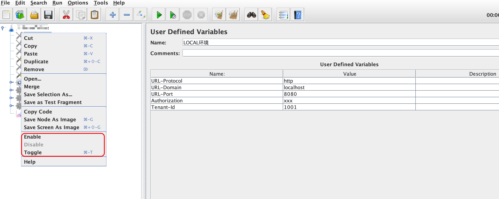
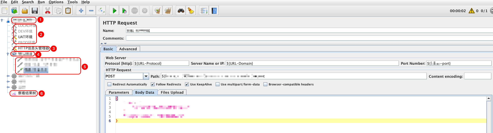
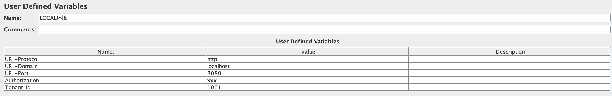
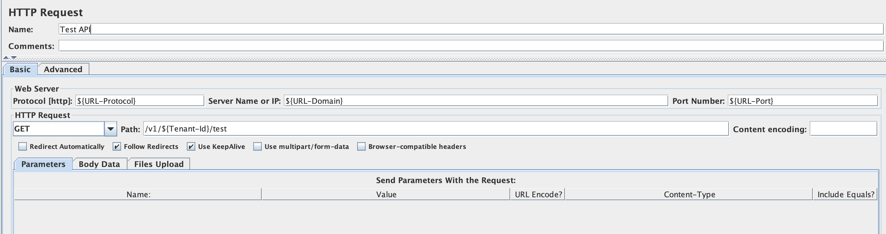
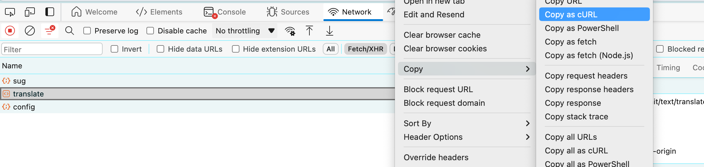
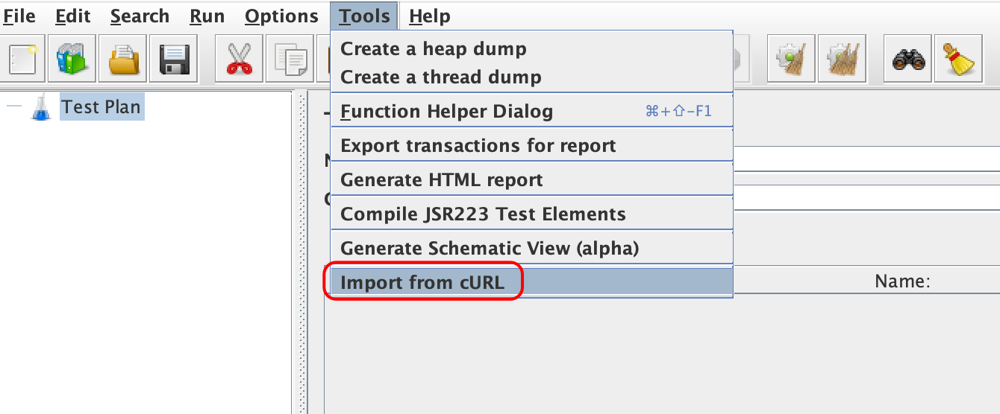
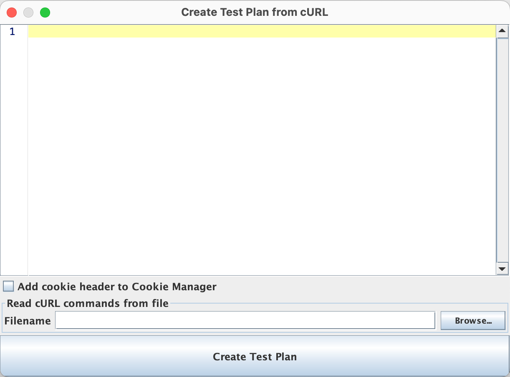

用Jmeter替代Postman

文章目录
最近更新了Postman，发现必须登录才能创建Workspace，这样你的数据就会被同步到云端，这我就不能接受了（可能有的人会说你那点数据有什么隐私呀，今天工地没开工，咱不抬杠哈～）。作为Postman的十年老粉（从Postman还是Chrome插件时开始使用），是时候说再见了。
Jmeter作为一款性能测试工具，功能非常强大，足以满足我们日常接口测试的需求了。说实话Jmeter的用户体验不是很好，但是对于我来说接口测试也不是一个高频的事项，工具够用且可控就行了。
这里并不是Jmeter的使用教程，我可能也不会按标准的方式去使用每个组件😂，我只是从Web后端开发的角度，去分享我日常测试的使用经验。
组件的启用与禁用

如上图所示，右键Jmeter的组件就能选择启用或禁用，当一个组件被禁用时，执行测试时就会忽略该组件，这个功能极大的提高的Jmeter的灵活性。
当父组件被禁用时，子组件也会被禁用。
工程结构

我每做一个项目，都会创建一个结构类似上图所示的测试工程，其中：
- 是项目的根目录，用于区分不同的项目。在Jmeter这里使用的是测试计划（Test Plan）；
- 是项目的环境信息，用于把不同环境具有差异化的内容区分开（如网关地址，端口等），下面再做介绍。在Jmeter这里使用的是用户定义的变量组件（User Defined Variables）；
- 是接口的HTTP信息头管理器，用于统一管理所有接口公共的HTTP头信息。在Jmeter这里使用的是HTTP信息头管理器组件（HTTP Header Manager）；
- 是模块的目录，用于区分不同的模块，每个模块的接口都放在该模块目录下。在Jmeter这里使用的是线程组组件（Thread Group）；
- 是具体的接口，用于定义一个待测试的接口。在Jmeter这里使用的是HTTP请求组件（HTTP Request）；
- 是查看接口调用结果的地方。在Jmeter这里使用的是察看结果树组件（View Results Tree）。
环境信息
和Postman的环境变量一样，在Jmeter中也可以使用环境变量。你的项目有几套环境，你就可以创建几套环境信息（使用Jmeter的User Defined Variables组件），在环境信息里定义不同的变量，代替不同环境间差异化的内容（如网关地址、端口等），如下图所示：

然后在定义接口时，使用变量来代替具体的值（Jmeter使用 ${} 引用变量），如下图所示：

这样结合上面介绍的组件启用与禁用功能，就可以实现不同环境间的切换测试了。
Import from cURL
当测试人员复现了一个比较复杂的BUG时，可能接口的参数比较多，在Jmeter里手动构建接口比较麻烦，此时就可以通过cURL导入接口到Jmeter，慢慢地回放与调试。具体操作如下：
首先在浏览器的 开发人员工具 中右键对应的接口，选择 Copy as cURL

然后在Jmeter中选择 Tools -> Import from cURL，把上面复制的内容填进去，再点击 Create Test Plan 按钮即可。

